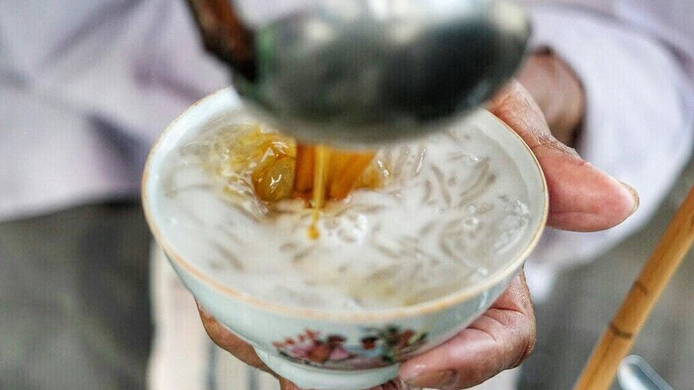

8 Rekomendasi Warung Dawet Jabung Paling Enak di Ponorogo, Wajib Dicoba untuk Jelajahi Cita Rasa yang Otentik
Senin, 1 Juli 2024, 09:55 WIB
PonorogoNews.com - Ponorogo adalah kota yang tak hanya terkenal dengan kekayaan budaya, tetapi juga menyajikan kenikmatan kuliner yang menggugah selera.
Salah satu ikon kuliner yang melekat erat dengan kota ini adalah Dawet Jabung, minuman tradisional yang begitu khas dan lezat.
Dalam artikel ini, mari kita menjelajahi warung-warung Dawet Jabung paling enak di Ponorogo yang patut dicoba.
Obati Dahaga di Warung Dawet Jabung Paling Enak
Melalui artikel ini pula, kita mengajak Anda untuk merasakan kelezatan khas kuliner tradisional yang masih melestarikan cita rasa otentiknya.
Sensasi menyegarkan yang mengalir dalam setiap mangkuknya, Dawet Jabung akan membuat para pecinta kuliner melalui petualangan rasa yang penuh warna dan kenikmatan yang tak terlupakan.
Langsung saja simak 8 rekomendasi warung Dawet Jabung paling enak di Ponorogo berikut ini!
1. Warung Dawet Jabung Bu Sumini
Dawet Jabung ala Bu Sumini telah menjadi legenda dan referensi utama bagi penduduk sekitar maupun para penikmat konten kreator kuliner. Warung ini dianggap sebagai pelopor dan telah lama menjadi tempat yang dikenal menjual Dawet Jabung.
Terletak di sekitar Perempatan Jabung, Desa Jabung, Mlarak, Ponorogo, usaha Dawet Jabung ini sudah beroperasi sejak tahun 1950-an, diwariskan dari ayah Bu Sumini yang awalnya menjual keliling.
Baca Juga: Kapan Bandara Dhoho Kediri Beroperasi Penuh, Kemenhub Berikan Tanggal Pasti
Keunggulan Dawet Jabung Bu Sumini tak diragukan lagi. Salah satunya, bahan baku cendolnya berasal dari tepung aren, memberikan tekstur yang lembut dan kenyal. Selain itu, sirupnya terbuat dari gula kelapa asli.
Warung Dawet Jabung Bu Sumini buka setiap hari mulai pukul 09.00 hingga 17.00, dengan harga satu mangkok dibanderol seharga Rp 6 ribu.
Mampu mempertahankan kualitas dan cita rasa otentik selama bertahun-tahun, Dawet Jabung Bu Sumini tetap menjadi destinasi utama bagi pencinta kuliner tradisional di Ponorogo.
2. Warung Dawet Jabung Bu Matun
Warung Dawet Jabung Bu Matun terletak di kelurahan Tanam Arum, Kecamatan Ponorogo, yang tepatnya berada di Jalan Jaksa Agung Suprapto.
Baca Juga: Rekomendasi Destinasi Utama untuk Habiskan Weekend di Ponorogo bersama Keluarga, Ada di Area Kota!
Bu Matun dikenal sebagai salah satu penjual es dawet legendaris yang masih bertahan, telah berdiri sejak tahun 1984 dan tetap eksis hingga saat ini tanpa kehilangan daya tariknya.
Warung es dawet ini juga selalu ramai pembeli, dan keunikan lainnya adalah cendol dawetnya berwarna putih, menandakan tidak ada tambahan bahan pewarna.
Menikmati es dawet Bu Matun tidak akan membuat kantong terlalu kering, karena harganya sangat terjangkau. Es dawet dibanderol seharga Rp 1.500, sementara jajanan gorengannya tersedia dengan harga Rp 500 perak.